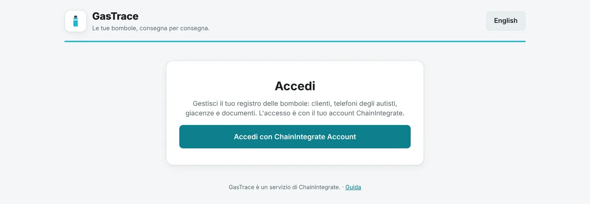
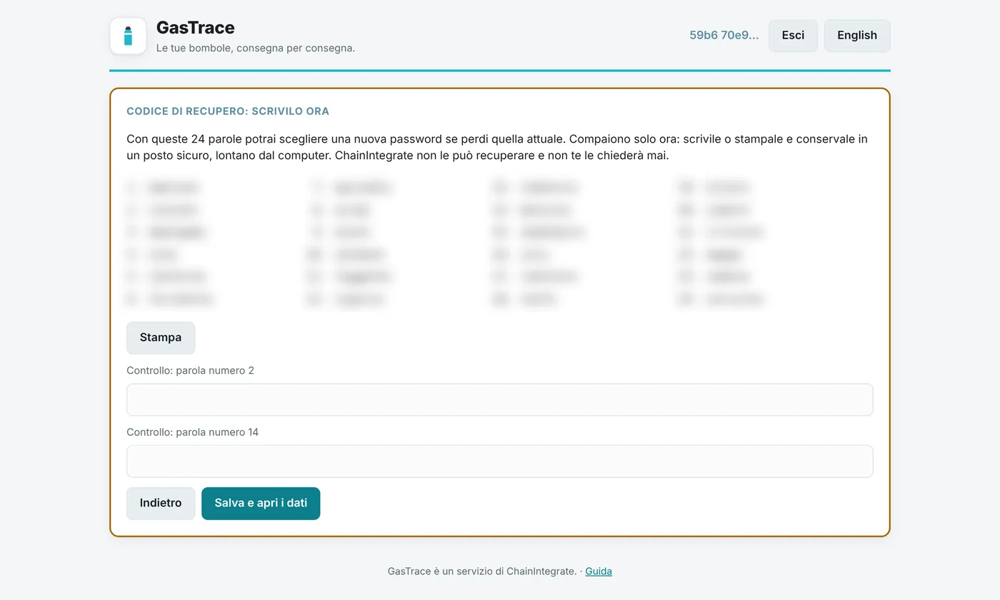
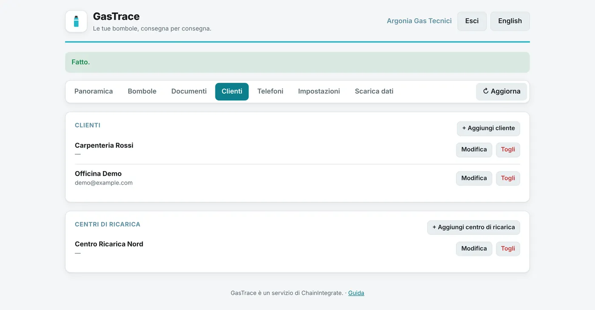
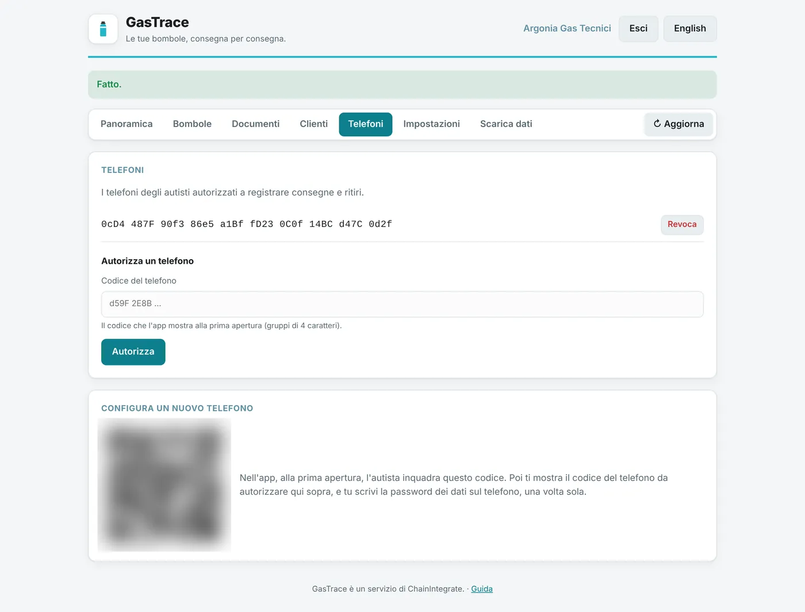
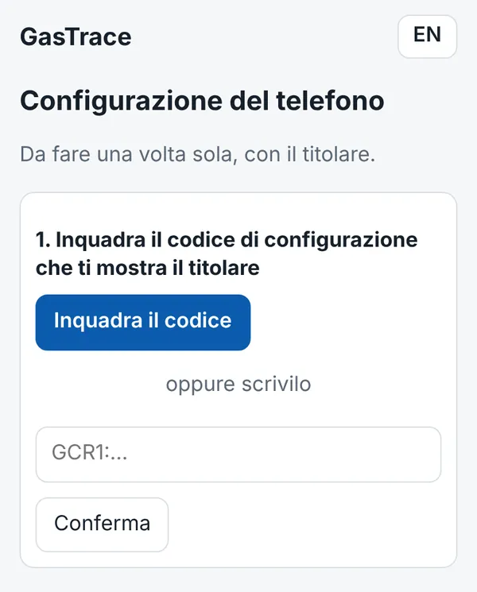

BOZZA della nuova versione: da approvare. Le immagini sono ancora quelle della versione attuale; le parti nuove non ne hanno.
Le immagini vengono da una prova con dati di esempio.
Come funziona
Ogni bombola ha la sua scheda: gas, di chi è, dove si trova, se è piena, vuota o difettosa, quando scade il collaudo, e tutti i suoi movimenti. Le schede si aggiornano da sole a ogni documento dell'autista.
- Il titolare usa la pagina gastrace.chainintegrate.it dal computer: vede le bombole e i documenti, gestisce clienti, telefoni e impostazioni.
- L'autista usa l'app GasTrace sul telefono Android: inquadra il codice a barre delle bombole alla consegna, al ritiro e alla ricarica.
- Dopo ogni documento parte una mail al cliente e all'azienda.
- I dati sono cifrati: si leggono solo con la password dei dati del titolare. Nessun costo per operazione a carico dell'azienda: lo gestisce ChainIntegrate.
Attivare GasTrace
Si fa una volta sola, prima di tutto il resto. Ti servono:
- l'account ChainIntegrate dell'azienda, già creato;
- il computer amministratore dell'account: quello su cui hai creato l'account, con l'estensione ChainIntegrate Account nel browser.
- Sul computer amministratore apri gastrace.chainintegrate.it e premi Accedi con ChainIntegrate Account.
- Si apre la finestra dell'estensione: controlla che il sito sia
gastrace.chainintegrate.ite conferma. - La pagina dice "GasTrace non è ancora attivo per questo account" e mostra l'indirizzo dell'account (inizia con
0x). - Premi Richiedi l'attivazione: si apre il tuo programma di posta con una mail già scritta per info@chainintegrate.it, con dentro l'indirizzo dell'account. Aggiungi il nome dell'azienda dove indicato e invia.
- ChainIntegrate attiva GasTrace e ti risponde per mail: "GasTrace è attivo".
- Riapri gastrace.chainintegrate.it sullo stesso computer e prosegui con il primo accesso.
Se premendo Richiedi l'attivazione non si apre nessun programma di posta, premi Copia la richiesta, incollala in una mail nuova e mandala a info@chainintegrate.it.
Nella richiesta c'è solo l'indirizzo dell'account, che non è segreto. Non mandare mai a nessuno, nemmeno a ChainIntegrate, le parole di recupero dell'account, la password dei dati o il codice di recupero di GasTrace.
Per il titolare
Primo accesso
Dopo la mail "GasTrace è attivo", dal computer amministratore:
- Apri gastrace.chainintegrate.it e premi Accedi con ChainIntegrate Account; conferma nella finestra dell'estensione.
- La pagina trova da sola il registro delle bombole dell'azienda e mostra Prepara i dati del registro:
- scegli la password dei dati (due volte) e la lingua del codice di recupero, poi Continua;
- la pagina mostra il codice di recupero di 24 parole: scrivilo a mano o stampalo subito;
- riscrivi le due parole che ti chiede;
- spunta le due conferme: "Ho conservato la password dei dati" e "Ho scritto o stampato le 24 parole e le tengo lontano dal computer";
- premi Salva e apri i dati e conferma nella finestra dell'estensione.
- Prosegui con le impostazioni.
Le volte successive apri la pagina, accedi, scrivi la password dei dati e premi Apri. Ci vuole qualche secondo.
Ogni modifica (un cliente, un telefono, le impostazioni, una correzione) si conferma nella finestra dell'estensione, dal computer amministratore. Se premi Annulla lì, non cambia niente. Da un computer autorizzato solo come "accesso" puoi vedere i dati ma non modificarli.
Se la pagina dice che non trova l'estensione, installala da account.chainintegrate.it o apri la pagina con il browser in cui è già installata.




Password dei dati e codice di recupero
- La password dei dati apre i dati delle bombole. Resta nella pagina, non viene inviata a nessuno, e chiudendo la pagina viene dimenticata. Dopo 30 minuti senza uso la pagina si blocca da sola e la richiede.
- Il codice di recupero è di 24 parole e compare una volta sola. Tienilo stampato in un posto sicuro, lontano dal computer. Non fotografarlo, non mandarlo per mail e non darlo a nessuno: ChainIntegrate non te lo chiederà mai.
- Se perdi la password: nella schermata della password premi Ho perso la password, scrivi le 24 parole e scegli una nuova password.
- Per cambiarla: Impostazioni → Cambia password. I telefoni già configurati continuano a funzionare.
Senza password e senza codice di recupero nessuno, nemmeno ChainIntegrate, può più leggere i dati.
Una buona password è una frase di almeno 20 caratteri, oppure almeno 14 caratteri mescolando minuscole, maiuscole, cifre e simboli.
Impostazioni (da fare per prime)
- Nome dell'azienda: compare nell'app e nell'oggetto delle mail. Finché manca, l'app avvisa l'autista.
- Email dell'azienda: le caselle dell'azienda (ufficio, magazzino…) che ricevono una copia di ogni documento, di tutti i clienti, e gli avvisi importanti sul registro. Separale con una virgola.
- Collaudo: ogni quanti anni va rifatto, per ogni gas (proposto: 10 anni). Serve a calcolare la scadenza dall'ultimo collaudo, o l'ultimo collaudo dalla scadenza; per una singola bombola si può cambiare con Correggi.

Clienti e centri di ricarica
- Clienti → Aggiungi cliente: nome e mail. Le mail del cliente ricevono ogni documento che lo riguarda.
- Aggiungi centro di ricarica: il centro dove mandate le bombole a ricaricare (e a collaudare).
- Modifica cambia nome o mail; Togli lo archivia: l'app non lo propone più, e i suoi documenti restano con il suo nome.
Clienti e centri di ricarica possono avere bombole proprie: quando l'autista registra una bombola nuova sceglie di chi è (vedi Una bombola nuova).
L'autista vede l'elenco aggiornato alla prossima apertura dell'app.

Telefoni degli autisti
Ogni telefono va autorizzato una volta, con l'autista accanto. La sezione Telefoni mostra il codice QR di configurazione.
- L'autista installa l'app (vedi sotto) e la apre: inquadra il QR sullo schermo del computer.
- L'app gli fa creare la chiave del telefono con l'impronta o il PIN, poi mostra il codice del telefono (gruppi di 4 caratteri).
- Tu scrivi quel codice in Autorizza un telefono, premi Autorizza e confermi nell'estensione.
- L'app se ne accorge da sola e chiede la password dei dati: la scrivi tu sul telefono, una volta sola. Il telefono non la conserva.
Revoca un telefono perso, rubato o di un autista che non lavora più con voi: da quel momento non può più registrare niente. Al primo sblocco dopo la revoca, se c'è rete, l'app cancella da sola la chiave e i dati salvati sul telefono. Basta questo: cambiare la chiave dei dati serve solo nei casi rari.

Bombole e documenti
- Panoramica: quante bombole in deposito, dai clienti, in ricarica, difettose; per gas; quante con il collaudo scaduto o in scadenza; gli ultimi documenti.
- Bombole: cerca per codice, gas, cliente o proprietario. Clicca una bombola per vedere tutta la sua storia, movimento per movimento, correzioni comprese.
- Documenti: DDT, giacenze e documenti di ricarica, con le bombole e le segnalazioni confermate dall'autista.
Un documento grande parte in più pezzi. Se un pezzo non è ancora arrivato, il documento compare come Incompleto (2 di 3): di solito il telefono finisce l'invio da solo appena ha rete. Se resta incompleto, chiedi all'autista di aprire l'app con la rete; le bombole dei pezzi già arrivati sono comunque registrate.
Aggiorna ricarica i dati dopo un nuovo documento.


Collaudo
Ogni bombola ha la data dell'ultimo collaudo e la scadenza (mese e anno). Basta scriverne una, quella punzonata sulla bombola: l'altra la calcola GasTrace con gli anni scelti nelle impostazioni per quel gas.
- La data si scrive quando l'autista registra la bombola, e si aggiorna quando la bombola rientra collaudata dal centro di ricarica.
- In Bombole trovi i filtri Collaudo scaduto, In scadenza entro 3 mesi e Collaudo da completare (bombole registrate con la punzonatura non leggibile).
- Se l'autista consegna una bombola con il collaudo scaduto, l'app lo segnala; l'autista conferma e la segnalazione finisce nel documento e nella mail.
Correggere una bombola
Una volta registrata, solo il titolare può cambiare i dati di una bombola. Apri la bombola e premi Correggi:
- gas e litri;
- di chi è: dell'azienda, di un cliente o di un centro di ricarica;
- ultimo collaudo o scadenza, e ogni quanti anni va rifatto.
Scrivi il motivo (per esempio "gas sbagliato alla registrazione"), premi Salva e conferma nell'estensione. La correzione compare nella storia della bombola, con la data e il motivo: il dato precedente non sparisce.
Scaricare i dati
In Scarica dati puoi salvare sul computer i dati del registro, in file da aprire con Excel o LibreOffice (doppio clic sul file):
- Bombole: ogni bombola con gas, litri, proprietario, dove si trova, condizione, ultimo collaudo, scadenza e ultimo movimento;
- Movimenti: una riga per ogni bombola di ogni documento, dalla più vecchia alla più recente, correzioni comprese;
- Documenti: una riga per documento, con quante bombole consegnate, ritirate, contate o in ricarica;
- Clienti e centri di ricarica: nomi e mail.
I file si creano nella pagina stessa: i dati non passano da nessun server. Il nome del file contiene la data, così puoi tenere una copia al mese.
I file scaricati non sono cifrati: contengono nomi e mail dei clienti. Conservali come gli altri documenti dell'azienda.

Cedere il registro a un altro account
Serve solo se l'azienda cambia account ChainIntegrate. In Impostazioni premi Cedi il registro, scrivi l'indirizzo del nuovo account e conferma nell'estensione.
- Per sicurezza la cessione si completa solo dopo 3 giorni: il nuovo account la accetta dal suo computer amministratore.
- Le mail dell'azienda ricevono subito un avviso. Se non l'hai chiesta tu, premi Annulla la cessione e scrivi a ChainIntegrate.
Casi rari: cambiare la chiave dei dati
Per un telefono perso, rubato o di un autista che se ne va basta revocarlo da Telefoni: non può più registrare niente, e per aprire l'app serve comunque l'impronta o il PIN di quel telefono.
Cambia la chiave dei dati solo se pensi che qualcuno possa ancora leggere i dati senza permesso: qualcuno conosce la password dei dati, ha visto le 24 parole, o ha un telefono revocato insieme al suo PIN (per esempio un ex autista che si è tenuto il telefono).
- In Impostazioni premi Cambia la chiave dei dati.
- Scegli una nuova password dei dati: la pagina mostra un nuovo codice di recupero di 24 parole. Scrivilo come la prima volta, spunta le conferme e conferma nell'estensione.
- Su ogni telefono ancora autorizzato, l'app chiede la nuova password dei dati: la scrivi tu, una volta.
Da quel momento i dati nuovi si leggono solo con la nuova chiave; quelli vecchi restano leggibili con la nuova password. Le vecchie 24 parole non servono più: distruggile.
Per l'autista
Installare l'app
L'app GasTrace è per telefoni Android. Non è sul Play Store: si scarica dal sito di GitHub.
- Sul telefono apri l'ultima versione di GasTrace e tocca il file
gastrace-v….apkper scaricarlo. - Apri il file scaricato. La prima volta Android dice che non può installare app da questa fonte: tocca Impostazioni, attiva Consenti da questa fonte, torna indietro e l'installazione prosegue.
- Può comparire Play Protect, che propone di controllare l'app perché non viene dal Play Store: accetta il controllo, oppure tocca Altri dettagli → Installa comunque. È il controllo di Google sulle app che non passano dal suo negozio. Installa solo il file scaricato dal link di questa guida; per qualsiasi altro avviso, o un file arrivato da altre parti (mail, chat), fermati e chiedi a ChainIntegrate.
Il telefono deve avere un blocco schermo (impronta, PIN o sequenza): senza, l'app non può proteggere la sua chiave.
Non disinstallare mai l'app e non cancellarne i dati: la chiave del telefono andrebbe persa e il telefono andrebbe configurato di nuovo con il titolare.
Configurare il telefono (una volta, con il titolare)
- Apri GasTrace e tocca Inquadra il codice: inquadra il QR che il titolare ti mostra nella sua pagina.
- Tocca Crea la chiave e conferma con l'impronta o il PIN.
- L'app mostra il codice di questo telefono: dallo al titolare (puoi usare Copia).
- Quando il titolare l'ha autorizzato, l'app chiede la password dei dati: la scrive il titolare.
Da quel momento apri l'app con Sblocca con impronta o PIN. Dopo 10 minuti senza uso, o in secondo piano, l'app si blocca da sola: si riapre con impronta o PIN, e un documento lasciato a metà viene ripreso. I dati salvati sul telefono (clienti, documenti da inviare) sono cifrati: senza impronta o PIN non si leggono.
Se il titolare cambia la chiave dei dati, all'apertura l'app chiede di nuovo la password: la scrive il titolare.



Una bombola nuova
Quando inquadri una bombola mai registrata (in una consegna, in una giacenza o in una ricarica), l'app chiede:
- Gas, e se vuoi i litri;
- Di chi è: Nostra (proposto), Del cliente (il cliente del documento) oppure Di un centro di ricarica (scegli quale);
- Collaudo: scegli Ultimo collaudo o Scadenza, secondo cosa è punzonato sulla bombola, e scrivi mese e anno; l'altra data la calcola l'app. Se la punzonatura non si legge tocca Non leggibile: il titolare la ritrova in "Collaudo da completare".
Questi dati si scrivono una volta sola. Se hai sbagliato, dillo al titolare: li corregge lui dalla sua pagina.
Consegna e ritiro
- Tocca Consegna / ritiro e scegli il cliente.
- Tocca Inquadra bombola per ogni bombola, quelle che lasci e quelle che ritiri. Se il codice non si legge, usa Scrivi il codice.
- L'app propone da sola il movimento:
- una bombola in deposito, o mai vista prima, è una consegna (piena);
- una bombola che era già da questo cliente è un ritiro (vuota; puoi scegliere piena o difettosa).
- Per una bombola nuova rispondi alle domande di Una bombola nuova.
- Se compare una segnalazione (per esempio "Risulta presso un altro cliente", "È di un altro cliente", "Collaudo scaduto"), controlla e tocca Confermo le segnalazioni: finiscono anche nella mail.
- Scrivi il numero del DDT, controlla il riepilogo e a chi va la mail (puoi aggiungere un indirizzo), poi Invia e conferma con l'impronta o il PIN.
"Registrato" vuol dire che il documento è salvato; poi l'app dice se la mail è partita.


Giacenze
Si usa all'inizio, per registrare le bombole che si trovano già dai clienti o nei centri di ricarica, e ogni volta che serve un conteggio.
- Tocca Giacenze e scegli il cliente o il centro.
- Inquadra tutte le bombole presenti; per quelle nuove rispondi alle domande di Una bombola nuova.
- Invia. Non serve il numero di documento e non parte nessuna mail, a meno che tu non aggiunga un indirizzo.

Ricarica e collaudo
Tocca Ricarica e scegli il centro di ricarica. Inquadra le bombole: quelle in deposito risultano inviate a ricarica, quelle che erano in quel centro risultano rientrate da ricarica.
Per una bombola che rientra collaudata, tocca Collaudata sulla sua riga: l'app propone come ultimo collaudo il mese corrente. Se la punzonatura dice altro, correggilo, oppure scegli Scadenza e scrivi quella punzonata.
Scrivi il numero del documento e invia.
Controllare una bombola
Controlla una bombola: inquadra il codice e vedi gas, di chi è, dove si trova, condizione, scadenza del collaudo e ultimo movimento. Non registra niente.

Senza rete: "Da inviare"
Se non c'è segnale, o il servizio è occupato, il documento viene salvato sul telefono e parte da solo appena possibile. Nella schermata iniziale compare Da inviare (n): lì puoi vederli, mandarli con Invia ora o annullarli. Un documento annullato non potrà più essere registrato. Restano lì anche i documenti registrati la cui mail non è partita, con Manda dal telefono; quando l'hai mandata tocca Mail a posto: togli.
Un documento in attesa può essere rifiutato quando parte: se intanto un'altra persona ha registrato una delle stesse bombole ("Una bombola è cambiata nel frattempo"), se sono passati più di sette giorni ("Documento scaduto") o se il telefono è stato revocato. Se nessuna parte è stata registrata compare Rifai il documento: l'app lo riapre con lo stesso cliente, numero e bombole, rilette con il loro stato attuale. Controlla le righe e invia.
Un documento grande parte in più pezzi; se si interrompe, l'app manda da sola i pezzi mancanti appena ha rete. Un documento troppo grande (circa più di 80 bombole) non parte: l'app lo dice prima di firmare. Dividilo in due documenti.
La mail del documento
Dopo ogni DDT o documento di ricarica parte una mail alle mail del cliente, a quelle dell'azienda e agli indirizzi aggiunti nel documento, con le bombole e le segnalazioni confermate. Se l'app dice che la mail non è partita, o che non sa se è partita, tocca Manda dal telefono: si apre la tua app di posta con il testo già pronto.
Aggiornare l'app
Quando esce una nuova versione, nella schermata iniziale compare "È disponibile una nuova versione di GasTrace". Tocca Scarica, apri il file scaricato e conferma: la nuova versione si installa sopra quella vecchia e il telefono resta configurato. La versione installata è scritta in fondo alla schermata iniziale.

Problemi frequenti
"GasTrace non è ancora attivo per questo account"
Il registro non è ancora stato creato: segui Attivare GasTrace. Se hai già mandato la richiesta, aspetta la mail "GasTrace è attivo". Se l'hai già ricevuta, controlla di aver aperto la pagina con l'account dell'azienda (l'indirizzo mostrato deve essere quello della richiesta).
"Una bombola è cambiata nel frattempo"
Qualcuno ha registrato la stessa bombola dopo che l'hai inquadrata. Rifai il documento: l'app ripropone i movimenti aggiornati.
"Questo documento risulta già registrato"
Lo stesso numero di documento è già stato inviato. Controlla in "Da inviare" o chiedi al titolare di guardare in Documenti.
"È di un altro cliente"
La bombola risulta di proprietà di un cliente diverso da quello della consegna. Controlla di aver preso la bombola giusta; se consegni comunque, conferma la segnalazione. Se la proprietà è sbagliata, la corregge il titolare.
"Collaudo scaduto"
La scadenza del collaudo è passata. Valuta con il titolare se consegnarla; se consegni, conferma la segnalazione: compare nel documento e nella mail.
"Questo telefono non è più autorizzato"
Il titolare l'ha revocato: l'app ha cancellato la chiave e i dati del telefono. Se è un errore, va configurato di nuovo con il titolare.
Telefono perso, rubato o cambiato
Il titolare lo revoca subito da Telefoni. Il telefono nuovo si configura da capo, come la prima volta.
L'impronta non va più, o è stato tolto il blocco schermo
Android cancella la chiave dell'app quando si toglie il blocco schermo. Rimetti il blocco schermo e configura di nuovo il telefono con il titolare; il titolare revoca il vecchio codice.
La pagina non trova l'estensione
Apri la pagina nel browser dove è installata ChainIntegrate Account, oppure installala da account.chainintegrate.it.
L'app chiede di nuovo impronta o PIN
Dopo 10 minuti senza uso, o in secondo piano, l'app si blocca per proteggere i dati: sbloccala con impronta o PIN. Un documento lasciato a metà viene ripreso.
"Questa operazione si conferma da un computer amministratore del tuo account"
Le modifiche al registro (clienti, telefoni, impostazioni, password, correzioni) si confermano solo da un computer amministratore dell'account aziendale. Da un computer autorizzato solo come "accesso" puoi vedere i dati ma non modificarli: usa il computer amministratore.
"Un'altra postazione ha modificato questo dato"
Mentre modificavi un cliente o le impostazioni, qualcuno l'ha cambiato da un altro computer. La pagina mostra il dato aggiornato: controlla e rifai la modifica se serve.
"Password non corretta"
Controlla maiuscole e tastiera. Se l'hai persa, usa Ho perso la password con il codice di recupero.
Altro
Scrivi a ChainIntegrate (info@chainintegrate.it) indicando cosa stavi facendo e il messaggio che hai visto.